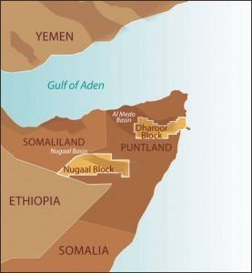

khatumo.net archive
Oil deal with Somaliland: a collossal mistake and a looming disaster for DNO !
By Osman Hassan
April 30, 2013

Block.18: Khatumo State of Somalia
 I am writing to you, on behalf of the Khatumo Forum for the Peace, Unity and Development, about the reported oil deal that your Executive Chairman, Mr.Mossavar-Rahmani, has signed in Washington on 22 April with Mr. Ahmed Mohamed Siilaanyo, leader of the one-clan secessionist enclave in northern Somalia that calls itself Somaliland. The deal is about an area in our Khatumo State of Somalia preposterously designated as Block SL 18 by the secessionists as if it was part of their phantom State. We are not surprised that the secessionists, chasing recognition and desperate for ill-gotten resources, would unscrupulously hawk to anyone willing to fall for their chicanery areas that are not in their own clan enclave and not even under their control. What amazes us though is that a well-known oil company should be party to what amounts to illicit territorial piracy against our Khatumo patrimony, a State member of Federal Somalia. As our president pointed out, in no unmistakable terms in his letter to your Chairman, the contract he signed with Somaliland’s leader is not worth the paper it is written on for there is no way DNO can exploit our God-given resources over our heads and that of the federal government of Somalia.
I am writing to you, on behalf of the Khatumo Forum for the Peace, Unity and Development, about the reported oil deal that your Executive Chairman, Mr.Mossavar-Rahmani, has signed in Washington on 22 April with Mr. Ahmed Mohamed Siilaanyo, leader of the one-clan secessionist enclave in northern Somalia that calls itself Somaliland. The deal is about an area in our Khatumo State of Somalia preposterously designated as Block SL 18 by the secessionists as if it was part of their phantom State. We are not surprised that the secessionists, chasing recognition and desperate for ill-gotten resources, would unscrupulously hawk to anyone willing to fall for their chicanery areas that are not in their own clan enclave and not even under their control. What amazes us though is that a well-known oil company should be party to what amounts to illicit territorial piracy against our Khatumo patrimony, a State member of Federal Somalia. As our president pointed out, in no unmistakable terms in his letter to your Chairman, the contract he signed with Somaliland’s leader is not worth the paper it is written on for there is no way DNO can exploit our God-given resources over our heads and that of the federal government of Somalia.
For your information, only one clan among the five clans in northern Somalia (former British Somaliland) subscribes to the secessionists’ so-called Somaliland. The other four are unionists even if Somaliland militia have admittedly occupied some parts of their regions. In the case of our Khatumo State, they only occupy our regional capital Lascanod which is expected to be liberated in due course. Otherwise, the rest of our State, including this so-called Block SL 18, is fully under our control.
 Furthermore, the international community, above all the UN, the African Union, the EU and even your own Norwegian government, all have repeatedly affirmed their support for Somalia’s unity and territorial integrity in which our Khatumo State is an integral part of it. In engaging in an illicit shady business adventure with outlaws that goes against the grain of the common stand of the international community, DNO is only shooting itself on the foot and would have nothing to gain from it. Unless DNO rescinds this unlawful contract with Somaliland, Khatumo State would be forced not only to foil it on the ground but also take the matter to all our sisterly Muslim countries that DNO has commercial operations. Khatumo also reserve the right to take legal action and seek damages for aiding and abetting the secessionists.
Furthermore, the international community, above all the UN, the African Union, the EU and even your own Norwegian government, all have repeatedly affirmed their support for Somalia’s unity and territorial integrity in which our Khatumo State is an integral part of it. In engaging in an illicit shady business adventure with outlaws that goes against the grain of the common stand of the international community, DNO is only shooting itself on the foot and would have nothing to gain from it. Unless DNO rescinds this unlawful contract with Somaliland, Khatumo State would be forced not only to foil it on the ground but also take the matter to all our sisterly Muslim countries that DNO has commercial operations. Khatumo also reserve the right to take legal action and seek damages for aiding and abetting the secessionists.
Sincerely
Osman Hassan
Chairman, Khatumo Forum for Peace, Unity and Development